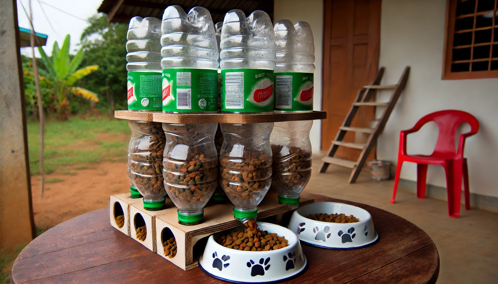
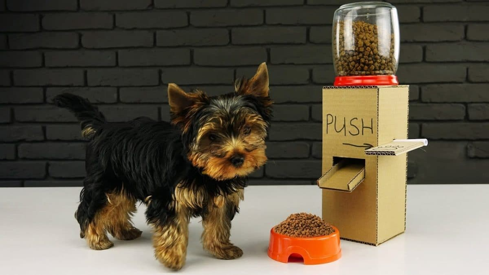
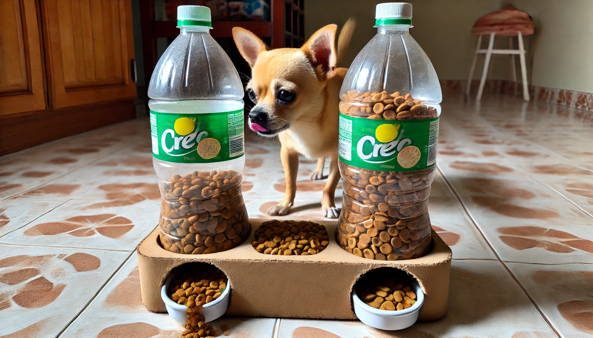

EcoSustentable
Aprende, Actúa y Cambia el Futuro. Encuentra proyectos innovadores y sustentables.
El Poder del Reciclaje

¿Qué es?
Es el proceso de transformar materiales desechados en nuevos productos para reducir el impacto ambiental, conservar recursos naturales y minimizar residuos.

¿Cómo puedes ayudar?
Separa tus residuos, reduce el consumo de desechables y reutiliza objetos. ¡Educar a otros y participar en programas locales marca una gran diferencia!

Beneficios Clave
Ahorra energía, reduce la contaminación del aire y agua, protege ecosistemas y fomenta la creación de empleos en la industria de la sostenibilidad.
Dispensadores Sustentables para Mascotas
Nuestro proyecto estrella reutiliza botellas de plástico para crear dispensadores de comida para mascotas. Son prácticos, fáciles de construir y fomentan la cultura del reciclaje. Cada dispensador incluye un código QR que enlaza a esta web, educando a la comunidad sobre el impacto positivo de sus acciones.
Esta iniciativa no solo ofrece una solución funcional, sino que promueve la participación activa en un movimiento por un planeta más limpio y saludable para todos.



Proyectos de Reciclaje Innovador
Jardineras colgantes
Decora y aprovecha espacios verticales con estas macetas hechas de botellas recicladas.

Recogedor de basura
Una herramienta práctica y sostenible fabricada con plástico reciclado para la limpieza diaria.

Organizador de escritorio
Ordena tus herramientas y accesorios del hogar con estos prácticos soportes de plástico.